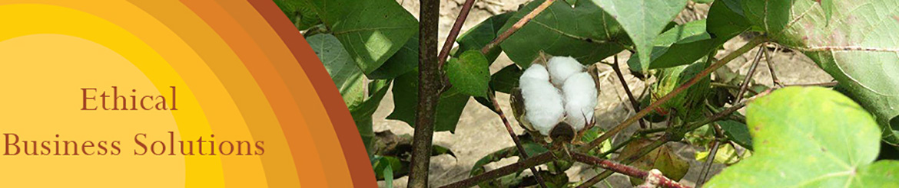
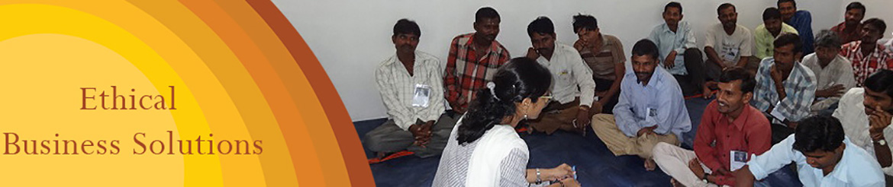
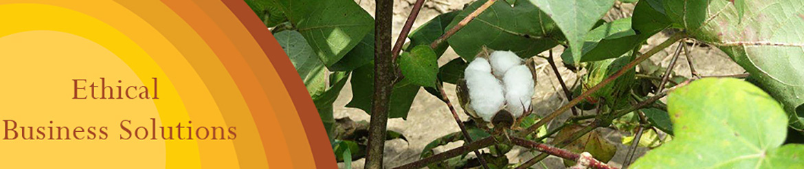
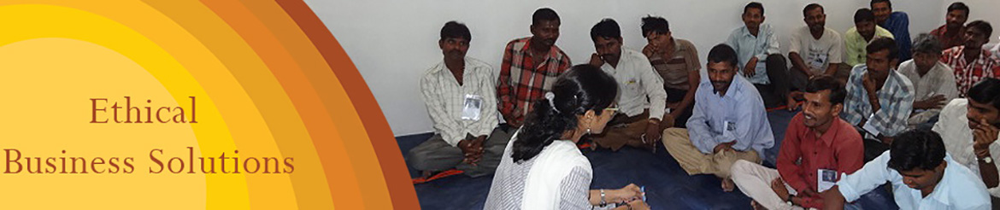
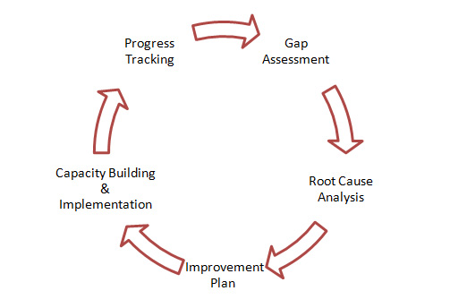

- IRFT invites you to Parivartan Crafts Mela on 16th October 2016. Follow Us on Facebook for more Updates.
- Fire Safety Workshop with Bombay Chambers of Commerce and Industry (BCCI).
- IRFT engaged in a ‘Capacity Building Project on Decent Work’ for Ambuja Cement Foundation.
- IRFT celebrates World Fair Trade Week from 9th to 15th May 2015. Follow Us on Facebook for more Updates.


Services - Ethical Business Solutions
2011-12 has been an exhilarating year for IRFT !!!
The Ethical Business Solutions division consists of services, which aim to promote, encourage, and monitor social and ethical aspects of business.
Our Goal:
To develop long term partnerships with all the stakeholders in the supply chain to achieve sustainable compliance through continuous improvement, monitoring and capacity building.
Objectives:
To render our services in a way that we are seen more as solution providers, than problem identifiers, through:
- A concrete fact finding approach
- Being an interface between the vendor and the Retailer towards mutual sustainability
- Creating realistic awareness on social compliance challenges
- To assist in development of a Continuous Improvement Plan for all stakeholders in the supply chain
We achieve this through a combination of services:
Social Compliance Monitoring
The Ethical Business Solutions division conducts audits that are transparent and participative in their approach. We conduct audits based on client code of conduct, local law and international standards. Our key approach for conducting audits is:
- Paying attention to the most vulnerable entity in the supply chain - the "Worker"
- Looking at all aspects of manufacturing in a way that the end result is "Sustainable Compliance"
- To analyze challenges to work towards long term "Sustainable Solutions" as opposed to problem centric solution
- Focusing on the "Root Cause" of compliance not being met
Social Compliance Training & Capacity Building of Workforce and Management Entity
Ethical Business Solutions division conducts trainings on various Codes of Conduct like Fair Labour Association (FLA) and Better Cotton Initiative (BCI). We also have the capacity to provide customized trainings in varied compliance objectives based on research. Our key strengths are:
- Integration of sectoral knowledge to customize trainings as per client specific requirements
- Simplifying compliance issues and standards
- Workplace Health and Safety
- Occupational Health and Safety
Continuous Improvement Monitoring (CIM)
Continuous Improvement Monitoring essentially looks at "Vendor Development" instead of "Vendor Evaluation". It looks towards breaking the conventional cycle of ‘audit, corrective action plan and re-audit/follow up audit’ as this ultimately leads to persistent non-compliance. The CIM service would provide with remediation strategies and practical solutions to the vendor and focus on progressive measures to attain compliance. It looks towards developing the vendors to understand the positives of the social compliance requirements leading to the objective of “Sustainable Compliance” hence a step further towards the vision of Globally Sustainable Supply Chain.
Continuous Improvement Monitoring Methodology:
Supply Chain Partnership Projects
We have a committed team to execute projects at different levels in the supply chain, with a focus on solutions to specific compliance issues. The intent of such projects is primarily to identify the areas of improvement, and build need based solution plans with qualitative/measureable indicators, thereby bridging the gap within the supply chain.
Research
Ethical Business Solutions division takes up research in areas of development of compliance standards, and comparison of Best Practices with challenges. We also specialize in product/ industry based research to have more practical approach towards meeting global requirements. Desk based and field study for producers/industries related to compliance challenges, towards practical remediation are also taken up by us to facilitate solutions.